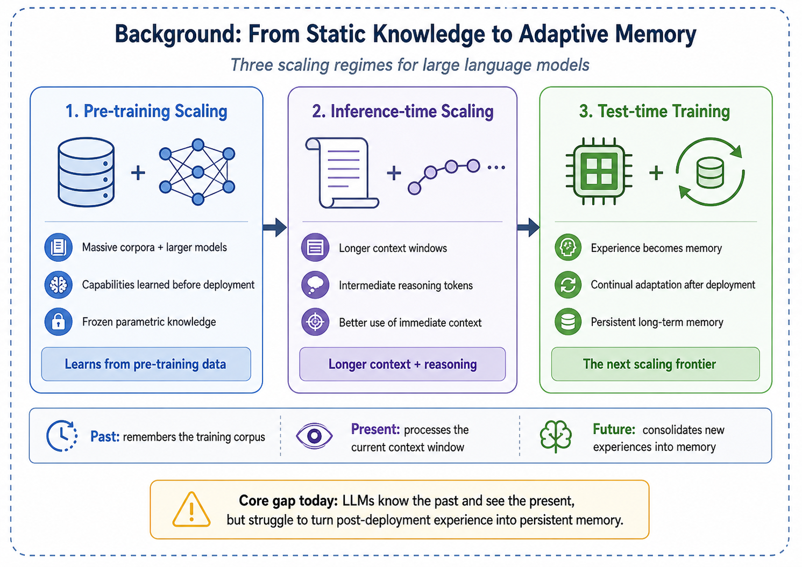
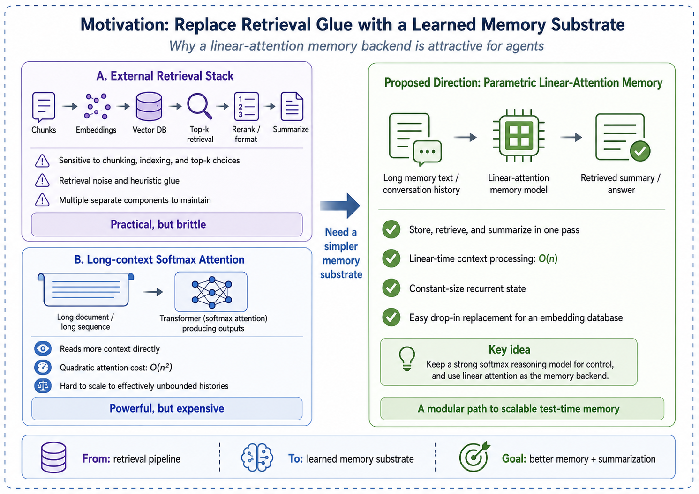
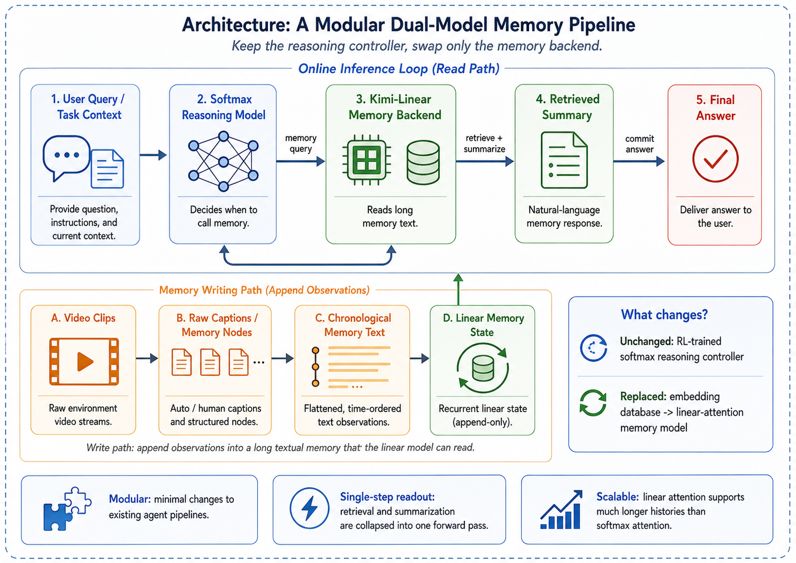

Linear Attention as a Generalizable Memory Mechanism
Chenxin Li, Hao Chen, Xuefeng Hu
Code companion. The corresponding implementation is LinMem: Linear Models as Memorizers for Agents.
Abstract
Large language models have advanced through pre-training scaling and inference-time scaling, yet they still struggle to turn post-deployment experience into persistent long-term memory. Existing agent memory stacks commonly rely on retrieval-style pipelines (e.g., vector databases with similarity search and engineered memory write/read rules) or brute-force long-context softmax attention; both can work well in practice, but often face brittleness to retrieval noise, heuristic design choices, and quadratic attention cost. We propose a simple and modular alternative: keep a strong softmax-attention reasoning model that decides when to query memory, and replace the external embedding database with a parametric linear-attention memory model (Kimi-Linear) that can summarize, store, and retrieve information through conversation. Our approach is inspired by recent long-term memory research (e.g., MIRAS, Titans, and nested learning), but differs in scope: instead of designing a tightly integrated multi-timescale system with memory updates at multiple levels and speeds, we focus on an easy-to-plug-in memory replacement compatible with current LLM agent pipelines. We validate this design on long-video understanding with M3-Agent-style memory calling, showing that linear-attention memory can serve as a practical, scalable substrate for test-time learning.
Introduction
The scaling of large language models (LLMs) has progressed through two major phases: pre-training scaling, which leverages massive corpora and growing parameter counts to unlock emergent capabilities [vaswani2017attention], and inference-time scaling, which expands context windows and generates intermediate reasoning tokens to improve output quality. Yet both paradigms share a critical blind spot: once pre-training concludes, the model's parametric knowledge is frozen. The resulting system can recall information from its training corpus and process the tokens within its immediate context window, but it lacks an intrinsic mechanism to consolidate new experiences into long-term memory. In effect, current LLMs suffer from a form of anterograde amnesia—they remember the distant past of pre-training and perceive the present of the context window, but they cannot bridge the two with persistent, updatable memory.

Test-time training as the next scaling frontier. This limitation points toward a third scaling frontier: test-time training (TTT) and continual learning, where the model adapts its internal state on the fly as it processes new data [sun2024learning; bell2025future]. The promise of this paradigm is an agent that genuinely learns from experience—accumulating episodic knowledge, refining its world model, and improving its performance over the course of deployment rather than remaining static after release.
Where today's agent memory stacks fall short. To extend memory beyond a fixed context window, many systems adopt retrieval-style pipelines: they store past information in external memory (e.g., a vector database, a structured memory store, or a tool-accessible knowledge base) and retrieve candidates via similarity search at inference time [packer2023memgpt; chhikara2025mem0]. These methods are practical and often strong, but their behavior can be sensitive to engineering choices (chunking and indexing, embedding models, and top-\(k\) policies) and to retrieval noise. A second direction is to push long-context softmax attention. Modern Transformers can scale to million-token contexts, but the core attention computation remains \(O(N^2)\) and still falls short in scenarios that require effectively unbounded histories [vaswani2017attention].

Linear attention and the memorization–abstraction dilemma. Linear attention models and modern recurrent architectures—including state space models (SSMs) [gu2024mamba], RetNet [sun2023retentive], RWKV [peng2023rwkv], and gated linear attention [yang2023gated]—offer an appealing alternative: they process sequences with \(O(N)\) complexity and maintain a constant-size hidden state, making them theoretically suitable for unbounded-length memory. However, these models have historically suffered from the memorization–abstraction dilemma: compressing an entire context into a fixed-size state can lose fine-grained recall, yielding “blurry” memories and weaker reasoning compared to full softmax attention [qin2022devil; behrouz2025titans].
Our approach: a simple, drop-in parametric memory for agents. Recent works such as MIRAS [behrouz2025connected], Titans [behrouz2025titans], and nested learning [behrouz2025nested] explore integrated designs where memory is updated at multiple levels and timescales (e.g., different modules, different update rules, and different speeds). In contrast, we ask a simpler question: can we replace the external embedding database in a modern agent with a linear-attention model, while keeping the rest of the agent pipeline unchanged?
Concretely, we build on the M3-Agent framework [long2025m3agent], where a reinforcement-learning (RL) trained softmax-attention policy learns when to call a memory operation and retrieves relevant information via cosine-similarity search over an embedding database. We keep the same high-level interface, but replace the embedding database with a linear-attention memory model (Kimi-Linear [team2025kimi]). The memory model both saves and searches memory through conversation: it incrementally summarizes long histories into a parametric state and is queried by the reasoning model when the RL policy decides memory is needed.
Contributions. Our main contributions are as follows:
- We formalize a modular, agent-friendly view of linear attention as a parametric long-term memory that can replace similarity-search databases with minimal changes to existing pipelines.
- We instantiate this design by augmenting an M3-Agent-style RL reasoning model with a Kimi-Linear memory module that performs memory write/read through conversation.
- We demonstrate the effectiveness of this replacement on long-video understanding benchmarks, highlighting a practical path toward scalable test-time learning.
Related Works
We review four lines of research that converge in our proposed framework: linear attention mechanisms, memory systems for LLMs, test-time training and continual learning, and multimodal agents with long-term memory.
Linear Attention Mechanisms
The standard Transformer [vaswani2017attention] computes attention via a softmax-normalized dot product of query and key matrices, yielding \(O(N^2)\) complexity in sequence length \(N\). A long line of work has sought to reduce this cost while preserving expressivity.
Early Linearizations. Initial efforts attempted to approximate softmax attention by replacing the exponential kernel with explicit or random feature maps, achieving \(O(N)\) complexity [zheng2022linear]. However, these approaches treated linearization as a mathematical convenience rather than an architectural opportunity, and often suffered from significant quality degradation [qin2022devil].
State Space Models and Selective Mechanisms. State space models (SSMs) reformulate sequence modeling as a continuous-time linear dynamical system discretized for efficient computation. Mamba [gu2024mamba] introduced input-dependent selective state transitions, allowing the model to filter irrelevant information and retain salient context. This selectivity can be viewed as a learned retention gate in the memory framework we adopt.
Recurrent Linear Attention. RetNet [sun2023retentive] combines multi-scale exponential decay with linear attention to achieve a retention-based recurrence, offering both parallel training and \(O(1)\) inference memory. RWKV [peng2023rwkv] reinvents classical RNN gating within the Transformer paradigm, scaling to billions of parameters while maintaining linear complexity. Gated Linear Attention (GLA) [yang2023gated] introduces data-dependent gating into the linear attention update, improving expressivity while preserving hardware-efficient training.
Delta Rule and Beyond. Yang et al. [yang2024parallelizing] demonstrated that the delta rule—which updates the associative memory by correcting its current prediction error—can be parallelized over sequence length, enabling efficient training of linear Transformers with stronger memory capacity than simple additive (Hebbian) updates. Gated Delta Networks [yang2024gateddelta] further combine delta-rule updates with Mamba-style gating. Most recently, Kimi-Linear [team2025kimi] scales expressive linear attention to production-grade language models, demonstrating competitive quality with softmax Transformers at substantially lower inference cost.
Unified Frameworks. The MIRAS framework [behrouz2025connected] provides a unifying lens by decomposing any sequence model into four design axes: associative memory architecture (the structure storing memories), attentional bias (the internal optimization objective, e.g., \(_2\) regression for the delta rule), retention gate (the forgetting mechanism), and learning algorithm (the optimizer updating the memory). This decomposition reveals that many linear attention models occupy a narrow region of the design space—typically using matrix-valued memory with Hebbian or delta-rule updates—and motivates richer, more integrated designs involving deep neural memory and higher-order optimization, as explored by Titans [behrouz2025titans], Atlas [behrouz2025atlas], and nested learning [behrouz2025nested]. In this work, we take these lines of research as inspiration but focus on a modular setting: using a production-grade linear attention model as a drop-in replacement for similarity-search memory in an existing agent pipeline.
Memory Mechanisms for LLM-Based Agents
As LLM-based agents are deployed in long-horizon, multi-session settings, the need for persistent memory beyond the context window has motivated a variety of external memory architectures.
Virtual Context Management. MemGPT [packer2023memgpt] draws an analogy between an LLM's context window and physical RAM, proposing a virtual memory hierarchy inspired by operating systems. The model manages paging between a main context (working memory) and an external storage tier (long-term memory), enabling document analysis and multi-session dialogue beyond the native context limit.
Structured Persistent Memory. Mem0 [chhikara2025mem0] dynamically extracts and consolidates salient information from conversations into a persistent store, achieving 26% relative improvement over baselines on long-form dialogue benchmarks while reducing latency by 91%. MIRIX [wang2025mirix] extends this idea with six distinct memory types—core, episodic, semantic, procedural, resource, and knowledge vault—coordinated by a multi-agent framework, achieving state-of-the-art performance on multimodal and conversational benchmarks.
Learning-Based Memory Management. Rather than relying on fixed heuristics for memory operations, recent work trains agents to manage memory through reinforcement learning. Mem-\(\) [wang2025memalpha] uses RL to teach agents when and how to extract, store, and update memory, demonstrating generalization from 30k-token training instances to sequences exceeding 400k tokens. Memory-R1 [yan2025memory] equips LLMs with structured memory operations (add, update, delete) optimized via PPO and GRPO, outperforming strong baselines with only 152 training examples. MEM1 [zhou2025mem1] introduces end-to-end RL for joint memory consolidation and reasoning, achieving 3.5\(×\) performance improvement with 3.7\(×\) memory reduction compared to larger instruction-tuned models. MemAgent [yu2025memagent] directly optimizes for long-text tasks via an overwrite-based memory strategy trained with multi-conversation RL, extrapolating from 32k training contexts to 3.5M-token tasks with less than 5% performance degradation.
Taxonomies and Surveys. Wu et al. [wu2025human] provide a comprehensive mapping between human memory systems (sensory, working, long-term) and their AI counterparts, proposing a 3D-8Q taxonomy along the dimensions of object (personal vs.\ system), form (parametric vs.\ non-parametric), and time (short-term vs.\ long-term). This taxonomy highlights a critical gap: most current systems lack a parametric long-term memory module that can be updated continuously—precisely the role we argue linear attention should fill.
Test-Time Training and Continual Learning
Test-Time Training. Sun et al. [sun2024learning] introduced the TTT framework, which replaces the fixed hidden state of an RNN with a machine learning model—a linear model (TTT-Linear) or a two-layer MLP (TTT-MLP)—whose parameters are updated via self-supervised learning on the test sequence. This reframes the recurrent state update as an optimization step, enabling the hidden state to grow in expressivity with the complexity of the input. TTT-MLP demonstrates continued perplexity reduction with increasing context length, a property that standard RNNs (including Mamba) fail to exhibit beyond 16k tokens.
Neural Long-Term Memory. Titans [behrouz2025titans] extends the TTT concept by introducing a neural long-term memory module that uses surprise-driven gradient updates with momentum. The memory—implemented as a deep MLP—updates significantly for novel inputs and minimally for predictable ones. Titans proposes three integration strategies: Memory as Context (MAC), Memory as Gate (MAG), and Memory as Layer (MAL), with MAC being particularly effective for the dual-model paradigm as it allows the linear memory to act as a compressor feeding the softmax-attention reasoning window.
Nested Learning and Deep Transformers. Behrouz et al. [behrouz2025nested] introduce the concept of nested learning, arguing that deep learning architectures should be understood as systems of nested optimization problems at multiple timescales. This perspective yields Atlas [behrouz2025atlas], a long-term memory module that optimizes based on both current and past tokens, overcoming the purely online nature of prior models. Atlas achieves over 80% accuracy on the BABILong benchmark at 10M context length, substantially outperforming both Transformers and prior linear recurrent models.
Continual Learning for Foundation Models. Bell et al. [bell2025future] identify three key directions for continual learning in the foundation model era: continual pre-training (CPT) for maintaining knowledge freshness, continual fine-tuning (CFT) for domain specialization, and continual compositionality and orchestration (CCO) for dynamically composing specialized modules. The authors argue that CCO represents the “rebirth” of continual learning, enabling modular ecosystems where a linear-attention memory module can be attached to a frozen foundation model to provide infinite context without retraining. Dohare et al. [dohare2023maintaining] further demonstrate that maintaining plasticity—the ability to continue learning—is a fundamental challenge in deep continual learning, motivating architectural designs that explicitly preserve adaptability.
Multimodal Agents with Long-Term Memory
Long-video understanding provides a natural testbed for scalable memory, as video data presents an unbounded stream of high-dimensional, multimodal information with inherently low information density per frame.
M3-Agent. Long et al. [long2025m3agent] introduce M3-Agent, a multimodal agent that processes continuous visual and auditory streams to build and update long-term memory organized as an entity-centric multimodal graph. The agent maintains two complementary memory types: episodic memory (specific timestamped events) and semantic memory (abstracted general knowledge). A key component is an RL-trained reasoning policy that decides when to trigger memory operations and retrieves candidates using similarity search (e.g., cosine similarity) over an embedding-based memory store.
Our method is directly motivated by this design: we keep the RL-trained softmax-attention reasoning model and its “memory-call” interface, but replace the embedding database with a parametric linear-attention memory model (Kimi-Linear [team2025kimi]). This replacement allows memory write/read to be performed through conversation with a learnable linear memory module, rather than relying solely on embedding retrieval.
Method
We describe our approach for replacing the embedding-based retrieval module in an existing multimodal agent with a linear-attention memory model. The design principle is modularity: we change only the memory backend while keeping the reasoning controller, memory graph construction, and evaluation pipeline intact.

Dual-Model Architecture
Our system consists of two cooperating language models with complementary roles:
Reasoning model (softmax attention). A standard Transformer-based LLM serves as the reasoning controller. Given a user query, it decides when to access memory and how to formulate the retrieval request. In the M3-Agent framework [long2025m3agent], this controller is trained with reinforcement learning to perform multi-turn reasoning: at each turn it either issues a memory query or commits to a final answer. We keep this controller unchanged across all experiments, isolating the effect of the memory backend.
Memory model (linear attention). A linear-attention LLM replaces the embedding database as the persistent memory store. Rather than encoding memories into fixed-dimensional vectors and retrieving them via cosine similarity, the memory model reads the full textual memory through its context window and responds with relevant information in natural language. This design exploits two properties of linear attention: (i) the \(O(N)\) inference complexity enables processing much longer memory contexts than quadratic-cost Transformers, and (ii) the model can simultaneously retrieve and summarize, producing contextually appropriate answers rather than raw memory fragments.
Concretely, we use Kimi-Linear-48B-A3B [team2025kimi] as the primary memory model. Kimi-Linear employs delta attention—a variant of linear attention that updates an associative memory matrix via the delta rule (\(_2\) regression) rather than simple additive (Hebbian) accumulation [yang2024parallelizing]. The model uses a Mixture-of-Experts (MoE) architecture with approximately 3B active parameters, supporting a context window of up to 262k tokens.
Memory Operations via Conversation
The memory model exposes a simple conversational interface for both writing and reading.
Memory writing. As the agent processes a video, it generates textual descriptions of each clip: scene descriptions, dialogue transcripts, character appearances, and identified entities. These descriptions are concatenated chronologically to form the memory text. We consider two variants:
- Raw caption: the original video captions are used directly, preserving all low-level details.
- Structured memory: captions are first processed by M3-Agent's memory graph constructor [long2025m3agent], which extracts entity-centric episodic and semantic memory nodes.
Memory reading. When the reasoning controller issues a query, the memory model receives a prompt containing the full memory text and the query. It returns a natural-language summary of relevant information. Formally, given memory text \(M = [m_1, m_2, , m_T]\) (where each \(m_t\) corresponds to a clip) and a query \(q\), the memory model generates:
where \(f_mem\) is the linear-attention model and \(r\) is the retrieved summary. This summary is appended to the controller's context for the next reasoning step.
Contrast with embedding retrieval. In the standard M3-Agent pipeline, each memory node is encoded into a vector \(e_i R^d\) using a text embedding model (e.g., text-embedding-3-large). At query time, the query is similarly encoded into \(e_q\), and the top-\(k\) nodes are retrieved by cosine similarity:
The retrieved text fragments are then passed to the controller. This two-stage process (embed \(\) retrieve \(\) read) requires pre-computed embeddings, a vector index, and a separate summarization step. In contrast, our approach collapses retrieval and summarization into a single forward pass through the memory model. No embeddings need to be pre-computed, stored, or indexed—the memory exists purely as text consumed by the linear-attention model.
Complexity Analysis
Inference cost. Let \(N\) denote the total number of memory tokens. Embedding retrieval computes \(N/c\) dot products (where \(c\) is the chunk size), costing \(O(Nd/c)\) for retrieval plus a separate LLM call for summarization. A standard Transformer reading the full memory incurs \(O(N^2 d)\) attention cost. Linear attention reduces this to \(O(N d^2)\)—linear in sequence length—by maintaining a fixed-size state matrix \(S R^d × d\) that is updated recurrently:
where \(_t\) and \(_t\) are learnable retention and correction gates, respectively, and the last term implements the delta-rule correction [yang2024parallelizing; team2025kimi].
Memory footprint. The KV cache of a softmax-attention Transformer grows as \(O(N)\) per layer, limiting the maximum context length under a fixed GPU memory budget. Linear attention maintains a constant-size state per layer (\(O(d^2)\)), independent of sequence length. In practice, this means Kimi-Linear can process up to 262k tokens on 4\(×\)A100 GPUs, whereas a comparably-sized Transformer (Qwen3-30B-A3B [yang2025qwen3]) is limited to 131k tokens under the same hardware budget.
Practical trade-offs. The linear-attention approach incurs higher per-query latency than embedding lookup (which is essentially a matrix–vector product), but eliminates the need for embedding pre-computation, vector database maintenance, and separate summarization calls. For agent workloads where memory is queried a small number of times per task (typically 1–5 rounds in M3-Agent), the amortized cost is comparable.
Experiments and Results
We evaluate our linear-attention memory replacement on the M3-Bench long-video question answering benchmark [long2025m3agent], comparing against the original embedding-based retrieval and a standard Transformer memory backend.
Experimental Setup
Datasets. We use two subsets of M3-Bench:
- M3-Bench-robot: 100 robot-perspective videos recorded in indoor environments, totaling 1,276 QA pairs. Videos have a median of 67 clips per video, covering person understanding, spatial reasoning, and cross-modal questions.
- M3-Bench-web: 920 diverse web-sourced videos with 3,214 QA pairs, spanning a wider range of content types and difficulty levels.
Memory backends. We compare the following memory backends, all integrated into the same M3-Agent control pipeline:
- Embedding: the original M3-Agent retrieval using
text-embedding-3-largeembeddings with cosine-similarity top-\(k\) search [long2025m3agent]. - Kimi-Linear: Kimi-Linear-48B-A3B [team2025kimi] (delta attention, MoE, \(∼\)3B active parameters), served via vLLM with tensor parallelism across 4 GPUs and a maximum context of 262k tokens.
- Qwen3-30B-A3B: Qwen3-30B-A3B-Instruct [yang2025qwen3] (standard softmax attention with grouped-query attention, MoE, \(∼\)3B active parameters), served with a maximum context of 131k tokens. This serves as a Transformer baseline with matched active parameter count.
For ablation studies on linear-model selection, we additionally test RWKV-x060 (1.6B) [peng2023rwkv] and Falcon3-Mamba (7B) [gu2024mamba].
Evaluation. End-to-end QA accuracy is evaluated by an LLM judge that compares the agent's answer against the ground-truth annotation. For retrieval-specific ablations, we report Exact Hit@\(k\) (whether the ground-truth clip appears in the top-\(k\) retrieved clips), Near Hit (target \( 1\) clip), MRR (mean reciprocal rank), and Recall@\(k\).
All experiments feed raw video captions directly to the memory model (summary mode) unless otherwise noted, as this consistently outperforms using structured memory (see the referenced item).
Main Results: End-to-End QA Accuracy
the referenced item presents the end-to-end QA accuracy on both M3-Bench subsets.
| Memory Backend | Robot | Web |
|---|---|---|
| Embedding (text-embedding-3-large) | 28.8 | 47.5 |
| Qwen3-30B-A3B (softmax attention) | 24.5 | 49.8 |
| Kimi-Linear-48B-A3B (linear attention) | 28.0 | 54.0 |
On the Web subset, Kimi-Linear achieves 54.0% accuracy, outperforming the embedding baseline by +6.5% absolute and the Transformer baseline by +4.2%. On the Robot subset, Kimi-Linear (28.0%) performs comparably to the embedding baseline (28.8%), with the 0.8% gap within the margin of evaluation variance.
Discussion. The strong performance of Kimi-Linear on the Web subset suggests that the linear-attention memory model excels when videos are diverse and require flexible semantic understanding—precisely the setting where rigid embedding-based retrieval may miss relevant information that does not share surface-level lexical overlap with the query. On the Robot subset, where videos are more structured and repetitive (indoor environments with consistent entity types), embedding retrieval remains competitive.
Ablation Studies
Why Does Linear Memory Help? Retrieval vs.\ Summarization A natural question arises from the referenced item: since the linear-attention model replaces the embedding database, does it achieve better end-to-end QA by being a better retriever, a better summarizer, or both? We disentangle these two capabilities.
Retrieval accuracy is comparable, not superior. We isolate the retrieval component by testing whether each backend can identify the correct source clip given a query, bypassing the reasoning controller. the referenced item reports Exact Hit@5 at varying context lengths (number of candidate clips).
| Context | Robot | Web | ||
|---|---|---|---|---|
| Kimi | Embed. | Kimi | Embed. | |
| 10 | 56.0 | 54.9 | 56.5 | 64.5 |
| 20 | 33.5 | 29.7 | 37.6 | 40.9 |
| 30 | 25.8 | 19.8 | 31.2 | 27.4 |
| 50 | 12.1 | 12.1 | 18.3 | 21.0 |
| 80 | 7.7 | 8.8 | 15.1 | 20.4 |
| 100 | 7.1 | 8.8 | 14.5 | 20.4 |
The two methods are roughly comparable in retrieval, with complementary strengths: Kimi-Linear is stronger at moderate context lengths (20–30 clips on Robot, +3.8% to +6.0%), while embedding retrieval is more robust at longer contexts (80+ clips). Neither method dominates.
The advantage comes from summarization. Since retrieval accuracy alone does not explain Kimi-Linear's +6.5% end-to-end QA gain on the Web subset (the referenced item), the advantage must lie in the model's ability to comprehend and summarize the retrieved context—a capability that pure embedding retrieval fundamentally lacks. The embedding pipeline retrieves raw text fragments that the reasoning controller must interpret; the linear-attention model instead produces a contextually synthesized answer, reducing the burden on the controller.
To verify this, we evaluate summarization quality directly: given the relevant memory context for 20 factual queries, each model must produce a natural-language answer verified by keyword matching (the referenced item).
| Model | Accuracy | Keyword Recall |
|---|---|---|
| Kimi-Linear-48B-A3B | 95.0 | 95.0 |
| RWKV-x060 (1.6B) | 25.0 | 25.0 |
| Falcon3-Mamba (7B) | 5.0 | 5.0 |
Kimi-Linear achieves 95% accuracy, vastly outperforming smaller linear models. This result, combined with the retrieval analysis above, supports our central finding: the linear-attention memory model wins not by being a better retriever, but by collapsing retrieval and summarization into a single step, producing higher-quality information for the reasoning controller.
Choice of Linear-Attention Model We compare three linear-attention models on clip retrieval (210 queries from the Robot subset) to assess how model architecture and scale affect retrieval quality (the referenced item).
| Model | ExactHit | NearHit | MRR | R@5 | R@10 |
|---|---|---|---|---|---|
| Kimi-Linear (48B) | 14.76 | 19.52 | .049 | 8.10 | 14.76 |
| RWKV-x060 (1.6B) | 2.38 | 3.81 | .021 | 2.38 | 2.38 |
| Falcon3-Mamba (7B) | 1.43 | 1.43 | .014 | 1.43 | 1.43 |
Kimi-Linear outperforms the smaller linear models by a wide margin across all metrics (6\(×\) higher ExactHit than RWKV, 10\(×\) higher than Mamba). This gap is not merely a function of parameter count—Mamba (7B) underperforms RWKV (1.6B) despite being larger—suggesting that architecture quality (delta attention vs.\ selective state spaces vs.\ gated recurrence) and pre-training data/recipe are at least as important as scale.
Raw Caption vs.\ Structured Memory We compare the two memory writing strategies: feeding raw video captions directly to the linear model, versus first processing them through M3-Agent's structured entity-centric memory graph [long2025m3agent]. Results are shown in the referenced item.
| Memory Format | Accuracy |
|---|---|
| Raw caption | 31.4 |
| Structured memory graph | 27.1 |
Raw caption outperforms structured memory by 4.3% absolute. This suggests that the linear-attention model's long-context capability is sufficient to process raw captions directly, and that M3-Agent's structured memory processing—designed for embedding-based retrieval—may actually introduce information loss when paired with a model that can comprehend the full text. This finding aligns with the broader motivation of our work: replacing engineered heuristics with learned computation [sutton2019bitter].
Context Length Scalability
A key theoretical advantage of linear attention over softmax attention is the ability to process longer contexts under the same memory budget. We verify this empirically by comparing the maximum feasible context length of Kimi-Linear and Qwen3-30B-A3B on the same hardware (4\(×\)A100 80GB GPUs).
| Model | Max Context | \(∼\)Tokens |
|---|---|---|
| Qwen3-30B-A3B (softmax) | 131k | \(∼\)131k |
| Kimi-Linear-48B-A3B | 262k | \(∼\)262k |
In a needle-in-a-haystack experiment where we concatenate memories from multiple videos to create ultra-long contexts, Qwen3-30B-A3B fails with out-of-memory errors at approximately 250k tokens (\(∼\)300 clips), while Kimi-Linear continues to operate. Although retrieval accuracy degrades for both models as context length increases—a known challenge for long-context reasoning [behrouz2025titans]—the linear-attention model maintains the ability to process the input, whereas the Transformer cannot.
This 2\(×\) context length advantage becomes increasingly significant in deployment scenarios with long-lived agents that accumulate large memory stores over time. As linear-attention models continue to improve in quality, this scalability gap is expected to translate into a growing practical advantage.
Conclusion
We have presented a simple and modular approach to equipping LLM-based agents with parametric long-term memory: replacing the embedding-based retrieval database with a linear-attention language model that performs memory retrieval and summarization through conversation. By keeping the reasoning controller and evaluation pipeline unchanged, we isolate the effect of the memory backend and demonstrate that this drop-in replacement is both practical and effective.
Key findings. On the M3-Bench long-video understanding benchmark, Kimi-Linear-48B-A3B achieves 54.0% end-to-end QA accuracy on the Web subset, outperforming the embedding baseline (47.5%) by 6.5% absolute, while performing comparably on the Robot subset (28.0% vs.\ 28.8%). Ablation studies reveal that the advantage stems not from superior retrieval accuracy—where linear attention and embedding methods are roughly comparable—but from the linear model's ability to jointly retrieve and summarize, producing contextually synthesized answers rather than raw memory fragments. Among linear-attention models, we find that model quality matters significantly: Kimi-Linear (48B, delta attention) vastly outperforms RWKV (1.6B) and Mamba (7B) on both retrieval and summarization tasks. We also show that feeding raw captions to the linear model outperforms structured memory preprocessing, suggesting that sufficiently capable linear models can bypass the hand-designed heuristics of traditional memory pipelines—consistent with the principle that learned computation scales better than engineered rules [sutton2019bitter].
Limitations. Our study has several limitations. First, the performance gap on the Robot subset is negligible, indicating that linear-attention memory may not uniformly improve over embedding retrieval across all domains. Second, while linear attention offers a 2\(×\) context length advantage over comparably-sized Transformers, retrieval accuracy at extreme context lengths remains low for all models, and further work is needed to improve long-range recall. Third, our evaluation is limited to a single application domain (long-video understanding); generalization to other agent tasks (e.g., multi-session dialogue, document analysis, embodied navigation) remains to be validated.
Future directions. Several promising directions emerge from this work. The rapid progress in linear-attention architectures—from simple additive updates to delta-rule corrections [yang2024parallelizing], deep neural memory [behrouz2025titans], and nested learning [behrouz2025nested]—suggests that the quality gap between linear and softmax attention will continue to narrow, making parametric memory increasingly competitive. Exploring state caching—reusing the linear model's hidden state across queries to amortize context processing—could substantially reduce latency. Integration with RL-based memory management [wang2025memalpha; yan2025memory] could teach agents not just when to query memory, but how to optimally write to and maintain a parametric memory store. More broadly, we view this work as a first step toward agents that genuinely learn from experience: the linear-attention memory model is not merely a retrieval engine, but a parametric system that can, in principle, be updated through test-time training [sun2024learning] to continuously refine its memory representations as the agent accumulates new experiences.
References
- Vaswani, Ashish, Shazeer, Noam, Parmar, Niki, Uszkoreit, Jakob, Jones, Llion, Gomez, Aidan N, Kaiser, \Lukasz, Polosukhin, Illia. Attention is All You Need. Advances in Neural Information Processing Systems. 2017
- Sun, Yu, Dong, Xupu, Menon, Shakul, Yuan, Dennis, Ma, Jay, Gupta, Abhishek, Verma, Nikhil, Ge, Yuexiang, Kolter, J Zico, Efros, Alexei A, others. Learning to (Learn at Test Time): RNNs with Expressive Hidden States. arXiv preprint arXiv:2407.04620. 2024
- Bell, Jack, Quarantiello, Luigi, Coleman, Eric Nuertey, Li, Lanpei, Li, Malio, Madeddu, Mauro, Piccoli, Elia, Lomonaco, Vincenzo. The Future of Continual Learning in the Era of Foundation Models: Three Key Directions. arXiv preprint arXiv:2506.03320. 2025
- Packer, Charles, Fang, Vivian, Patil, Shishir G, Lin, Kevin, Wooders, Sarah, Gonzalez, Joseph E. MemGPT: Towards LLMs as Operating Systems. arXiv preprint arXiv:2310.08560. 2023
- Chhikara, Prateek, Khant, Dev, Aryan, Saket, Singh, Taranjeet, Yadav, Deshraj. Mem0: Building Production-Ready AI Agents with Scalable Long-Term Memory. arXiv preprint arXiv:2504.19413. 2025
- Gu, Albert, Dao, Tri. Mamba: Linear-Time Sequence Modeling with Selective State Spaces. First Conference on Language Modeling. 2024
- Sun, Yutao, Dong, Li, Huang, Shaohan, Ma, Shuming, Xia, Yuqing, Xue, Jilong, Wang, Jianyong, Wei, Furu. Retentive Network: A Successor to Transformer for Large Language Models. arXiv preprint arXiv:2307.08621. 2023
- Peng, Bo, Alcaide, Eric, Anthony, Quentin, Albalak, Alon, Arcadinho, Samuel, Biderman, Stella, Cao, Huanqi, Cheng, Xin, Chung, Michael, Grella, Matteo, others. RWKV: Reinventing RNNs for the Transformer Era. arXiv preprint arXiv:2305.13048. 2023
- Yang, Songlin, Wang, Bailin, Shen, Yikang, Panda, Rameswar, Kim, Yoon. Gated Linear Attention Transformers with Hardware-Efficient Training. arXiv preprint arXiv:2312.06635. 2023
- Qin, Zhen, Han, Xiaodong, Sun, Weixuan, Li, Dongxu, Kong, Lingpeng, Barnes, Nick, Zhong, Yiran. The Devil in Linear Transformer. arXiv preprint arXiv:2210.10340. 2022
- Behrouz, Ali, Zhong, Peilin, Mirrokni, Vahab. Titans: Learning to Memorize at Test Time. arXiv preprint arXiv:2501.00663. 2025
- Behrouz, Ali, Razaviyayn, Meisam, Zhong, Peilin, Mirrokni, Vahab. It's All Connected: A Journey Through Test-Time Memorization, Attentional Bias, Retention, and Online Optimization. arXiv preprint arXiv:2504.13173. 2025
- Behrouz, Ali, Razaviyayn, Meisam, Zhong, Peilin, Mirrokni, Vahab. Nested Learning: The Illusion of Deep Learning Architecture. arXiv preprint arXiv:2512.24695. 2025
- Long, Lin, He, Yichen, Ye, Wentao, Pan, Yiyuan, Lin, Yuan, Li, Hang, Zhao, Junbo, Li, Wei. Seeing, Listening, Remembering, and Reasoning: A Multimodal Agent with Long-Term Memory. arXiv preprint arXiv:2508.09736. 2025
- Team, Kimi, Zhang, Yu, Lin, Zongyu, Yao, Xingcheng, Hu, Jiaxi, Meng, Fanqing, Liu, Chengyin, Men, Xin, Yang, Songlin, Li, Zhiyuan, others. Kimi Linear: An Expressive, Efficient Attention Architecture. arXiv preprint arXiv:2510.26692. 2025
- Zheng, Lin, Wang, Chong, Kong, Lingpeng. Linear Complexity Randomized Self-Attention Mechanism. International Conference on Machine Learning. 2022
- Yang, Songlin, Wang, Bailin, Zhang, Yu, Shen, Yikang, Kim, Yoon. Parallelizing Linear Transformers with the Delta Rule over Sequence Length. Advances in Neural Information Processing Systems. 2024
- Yang, Songlin, Wang, Bailin, Zhang, Yu, Shen, Yikang, Kim, Yoon. Gated Delta Networks: Improving Mamba2 with Delta Rule. arXiv preprint arXiv:2412.06464. 2024
- Behrouz, Ali, Li, Zeman, Kacham, Praneeth, Daliri, Majid, Deng, Yuan, Zhong, Peilin, Razaviyayn, Meisam, Mirrokni, Vahab. Atlas: Learning to Optimally Memorize the Context at Test Time. arXiv preprint arXiv:2505.23735. 2025
- Wang, Yu, Chen, Xi. MIRIX: Multi-Agent Memory System for LLM-Based Agents. arXiv preprint arXiv:2507.07957. 2025
- Wang, Yu, Takanobu, Ryuichi, Liang, Zhiqi, Mao, Yuzhen, Hu, Yuanzhe, McAuley, Julian, Wu, Xiaojian. Mem-$\alpha$: Learning Memory Construction via Reinforcement Learning. arXiv preprint arXiv:2509.25911. 2025
- Yan, Sikuan, Yang, Xiufeng, Huang, Zuchao, Nie, Ercong, Ding, Zifeng, Li, Zonggen, Ma, Xiaowen, Kersting, Kristian, Pan, Jeff Z, Sch\"utze, Hinrich, others. Memory-R1: Enhancing Large Language Model Agents to Manage and Utilize Memories via Reinforcement Learning. arXiv preprint arXiv:2508.19828. 2025
- Zhou, Zijian, Qu, Ao, Wu, Zhaoxuan, Kim, Sunghwan, Prakash, Alok, Rus, Daniela, Zhao, Jinhua, Low, Bryan Kian Hsiang, Liang, Paul Pu. MEM1: Learning to Synergize Memory and Reasoning for Efficient Long-Horizon Agents. arXiv preprint arXiv:2506.15841. 2025
- Yu, Hongli, Chen, Tinghong, Feng, Jiangtao, Chen, Jiangjie, Dai, Weinan, Yu, Qiying, Zhang, Ya-Qin, Ma, Wei-Ying, Liu, Jingjing, Wang, Mingxuan, others. MemAgent: Reshaping Long-Context LLM with Multi-Conv RL-based Memory Agent. arXiv preprint arXiv:2507.02259. 2025
- Wu, Yaxiong, Liang, Sheng, Zhang, Chen, Wang, Yichao, Zhang, Yongyue, Guo, Huifeng, Tang, Ruiming, Liu, Yong. From Human Memory to AI Memory: A Survey on Memory Mechanisms in the Era of LLMs. arXiv preprint arXiv:2504.15965. 2025
- Dohare, Shibhansh, Hernandez-Garcia, J Fernando, Rahman, Parash, Mahmood, A Rupam, Sutton, Richard S. Maintaining Plasticity in Deep Continual Learning. arXiv preprint arXiv:2306.13812. 2023
- Yang, An, Li, Anfeng, Yang, Baosong, Zhang, Beichen, Hui, Binyuan, Zheng, Bo, Yu, Bowen, Gao, Chang, Huang, Chengen, Lv, Chenxu, others. Qwen3 technical report. arXiv preprint arXiv:2505.09388. 2025
- Sutton, Richard. The Bitter Lesson. 2019
BibTeX
@misc{li2026linearattentionmemory,
title = {Linear Attention as a Generalizable Memory Mechanism},
author = {Li, Chenxin and Chen, Hao and Hu, Xuefeng},
year = {2026},
month = apr,
howpublished = {Blog post},
url = {https://chenxinli001.github.io/blogs/linear-attention-memory/}
}